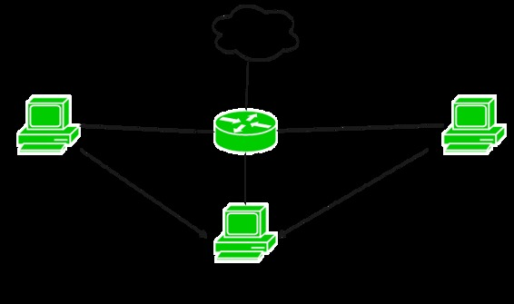

Prerequisite – Access-lists (ACL), Standard Access-list
Access-list (ACL) is a set of rules defined for controlling the network traffic and reducing network attack. ACLs are used to filter traffic based on the set of rules defined for the incoming or out going of the network.
Extended Access-list –
It is one of the types of Access-list which is mostly used as it can distinguish IP traffic therefore the whole traffic will not be permitted or denied like in standard access-list . These are the ACL which uses both source and destination IP address and also the port numbers to distinguish IP traffic. In these type of ACL, we can also mention which IP traffic should be allowed or denied . These use range 100-199 and 2000-2699.
Features –
- Extended access-list is generally applied close to the source but not always.
- In Extended access-list, packet filtering takes place on the basis of source IP address, destination IP address, Port numbers.
- In extended access-list, particular services will be permitted or denied .
- Extended ACL is created from 100 – 199 & extended range 2000 – 2699.
- If numbered with extended Access-list is used then remember rules can’t be deleted. If one of the rule is deleted then the whole access-list will be deleted.
- If named with extended Access-list is used then we have the flexibility to delete a rule from access-list.
Configuration –

Here is a small topology in which there are 3 departments namely sales, finance and marketing. Sales department having network 172.16.10.40/24, Finance department having network 172.16.50.0/24 and marketing department having network 172.16.60.0/24. Now, we want to deny FTP connection from sales department to finance department and deny telnet to Finance department from both sales and marketing department.
Now, first configuring numbered extended access – list for denying FTP connection from sales to finance department.
R1# config terminal
R1(config)# access-list 110
deny tcp 172.16.40.0 0.0.0.255 172.16.50.0 0.0.0.255 eq 21
Here, we first create an numbered Access-list in which we use 110 (used from extended access-list range) and denying the sales network (172.16.40.0) to make FTP connection to finance network (172.16.50.0).
Note – Here, as FTP uses TCP and port number 21. Therefore, we have to specify the permit or deny condition according to the need. Also, after eq we have use the port number for specified application layer protocol.
Now, we have to deny telnet connection to finance department from both sales and Marketing department which means no one should telnet to finance department. Configuring for the same.
R1(config)# access-list 110
deny tcp any 172.16.50.0 0.0.0.255 eq 23
Here, we have used the keyword any which means 0.0.0.0 0.0.0.0 i.e any ip address from any subnet mask. As telnet uses port number 23 therefore, we have to specify the port number 23 after eq .
R1(config)# access-list 110 permit ip any any
Now, this is the most important part. As we already know there is an implicit deny at the end of every access-list which means that if the traffic doesn’t match any of the rule of Access-list then the traffic will be dropped.
By specifying any any means that source having any ip address traffic will reach finance department except the traffic which it matches the above rules that we have made. Now, we have to apply the access-list on the interface of the router:
R1(config)# int fa0/1 R1(config-if)# ip access-group 110 out
As we remember, we have to apply the extended access-list as close as possible to source but here we have applied it to close to the destination because we have to block the traffic from both sales and marketing department, therefore, we have to apply it close to the destination here otherwise we have to make separate access-list for fa0/0 and fa1/0 inbound.
Named access-list example –
Now, considering the same topology, we will make a named extended access-list.
R1(config)# ip access-list extended blockacl
By using this command we have made an access-list named blockacl.
R1(config-ext-nacl)# deny tcp 172.16.40.0 0.0.0.255 172.16.50.0 0.0.0.255 eq 21 R1(config-ext-nacl)# deny tcp any 172.16.50.0 0.0.0.255 eq 23 R1(config-ext-nacl)# permit ip any any
And then the same configuration we have done in numbered access-list.
R1(config)# int fa0/1 R1(config-if)# ip access-group blockacl out